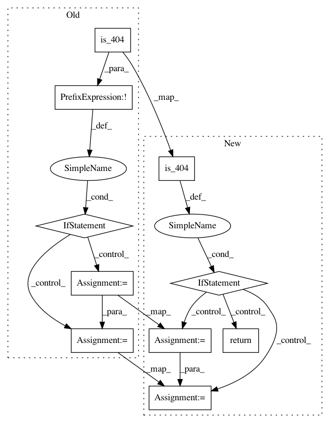

0c20b05179619d3dce5f4efe342ee2a553b9c1e8,w3af/plugins/crawl/wordpress_fullpathdisclosure.py,wordpress_fullpathdisclosure,_extract_paths,#wordpress_fullpathdisclosure#Any#,70
Before Change
theme_paths = []
wp_root_response = self._uri_opener.GET(domain_path, cache=True)
if not is_404(wp_root_response):
response_body = wp_root_response.get_body()
theme_regexp = "%swp-content/themes/(.*)/style.css" % domain_path
theme = re.search(theme_regexp, response_body, re.IGNORECASE)
if theme:
theme_name = theme.group(1)
for fname in ("header", "footer"):
path_fname = "wp-content/themes/%s/%s.php" % (
theme_name, fname)
theme_paths.append(path_fname)
return theme_paths
def _force_disclosures(self, domain_path, potentially_vulnerable_paths):
After Change
theme_paths = []
wp_root_response = self._uri_opener.GET(domain_path, cache=True)
if is_404(wp_root_response):
return
response_body = wp_root_response.get_body()
theme_regexp = "%swp-content/themes/(.*)/style.css" % domain_path
theme = re.search(theme_regexp, response_body, re.IGNORECASE)
if theme:
theme_name = theme.group(1)
for fname in ("header", "footer"):
path_fname = "wp-content/themes/%s/%s.php" % (theme_name, fname)
In pattern: SUPERPATTERN
Frequency: 3
Non-data size: 10
Instances
Project Name: andresriancho/w3af
Commit Name: 0c20b05179619d3dce5f4efe342ee2a553b9c1e8
Time: 2018-02-10
Author: andres.riancho@gmail.com
File Name: w3af/plugins/crawl/wordpress_fullpathdisclosure.py
Class Name: wordpress_fullpathdisclosure
Method Name: _extract_paths
Project Name: andresriancho/w3af
Commit Name: 0c20b05179619d3dce5f4efe342ee2a553b9c1e8
Time: 2018-02-10
Author: andres.riancho@gmail.com
File Name: w3af/plugins/crawl/urllist_txt.py
Class Name: urllist_txt
Method Name: crawl
Project Name: andresriancho/w3af
Commit Name: 0c20b05179619d3dce5f4efe342ee2a553b9c1e8
Time: 2018-02-10
Author: andres.riancho@gmail.com
File Name: w3af/plugins/crawl/robots_txt.py
Class Name: robots_txt
Method Name: crawl